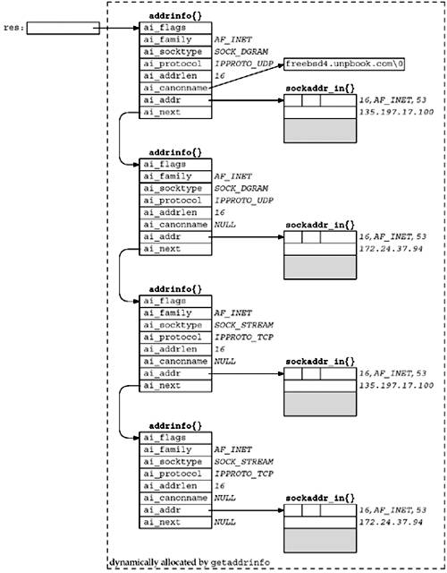
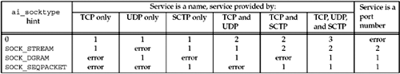

| [ Team LiB ] |
|
11.6 getaddrinfo FunctionThe gethostbyname and gethostbyaddr functions only support IPv4. The API for resolving IPv6 addresses went through several iterations, as will be described in Section 11.20; the final result is the getaddrinfo function. The getaddrinfo function handles both name-to-address and service-to-port translation, and returns sockaddr structures instead of a list of addresses. These sockaddr structures can then be used by the socket functions directly. In this way, the getaddrinfo function hides all the protocol dependencies in the library function, which is where they belong. The application deals only with the socket address structures that are filled in by getaddrinfo. This function is defined in the POSIX specification.
This function returns through the result pointer a pointer to a linked list of addrinfo structures, which is defined by including <netdb.h>.
struct addrinfo {
int ai_flags; /* AI_PASSIVE, AI_CANONNAME */
int ai_family; /* AF_xxx */
int ai_socktype; /* SOCK_xxx */
int ai_protocol; /* 0 or IPPROTO_xxx for IPv4 and IPv6 */
socklen_t ai_addrlen; /* length of ai_addr */
char *ai_canonname; /* ptr to canonical name for host */
struct sockaddr *ai_addr; /* ptr to socket address structure */
struct addrinfo *ai_next; /* ptr to next structure in linked list */
};
The hostname is either a hostname or an address string (dotted-decimal for IPv4 or a hex string for IPv6). The service is either a service name or a decimal port number string. (See also Exercise 11.4, where we want to allow an address string for the host or a port number string for the service.) hints is either a null pointer or a pointer to an addrinfo structure that the caller fills in with hints about the types of information the caller wants returned. For example, if the specified service is provided for both TCP and UDP (e.g., the domain service, which refers to a DNS server), the caller can set the ai_socktype member of the hints structure to SOCK_DGRAM. The only information returned will be for datagram sockets. The members of the hints structure that can be set by the caller are:
The possible values for the ai_flags member and their meanings are:
If the hints argument is a null pointer, the function assumes a value of 0 for ai_flags, ai_socktype, and ai_protocol, and a value of AF_UNSPEC for ai_family. If the function returns success (0), the variable pointed to by the result argument is filled in with a pointer to a linked list of addrinfo structures, linked through the ai_next pointer. There are two ways that multiple structures can be returned:
For example, if no hints are provided and if the domain service is looked up for a host with two IP addresses, four addrinfo structures are returned:
We show this example in Figure 11.5. There is no guaranteed order of the structures when multiple items are returned; that is, we cannot assume that TCP services will be returned before UDP services. Figure 11.5. Example of information returned by getaddrinfo.
The information returned in the addrinfo structures is ready for a call to socket and then either a call to connect or sendto (for a client), or bind (for a server). The arguments to socket are the members ai_family, ai_socktype, and ai_protocol. The second and third arguments to either connect or bind are ai_addr (a pointer to a socket address structure of the appropriate type, filled in by getaddrinfo) and ai_addrlen (the length of this socket address structure). If the AI_CANONNAME flag is set in the hints structure, the ai_canonname member of the first returned structure points to the canonical name of the host. In terms of the DNS, this is normally the FQDN. Programs like telnet commonly use this flag to be able to print the canonical hostname of the system to which they are connecting, so that if the user supplied a shortcut or an alias, he or she knows what got looked up. Figure 11.5 shows the returned information if we execute the following:
struct addrinfo hints, *res;
bzero(&hints, sizeof(hints) ) ;
hints.ai_flags = AI_CANONNAME;
hints.ai_family = AF_INET;
getaddrinfo("freebsd4", "domain", &hints, &res);
In this figure, everything except the res variable is dynamically allocated memory (e.g., from malloc). We assume that the canonical name of the host freebsd4 is freebsd4.unpbook.com and that this host has two IPv4 addresses in the DNS. Port 53 is for the domain service. This port number will be in network byte order in the socket address structures. We also show the returned ai_protocol values as IPPROTO_TCP or IPPROTO_UDP. It would also be acceptable for getaddrinfo to return an ai_protocol of 0 for the two SOCK_STREAM structures if that is sufficient to specify TCP (it is not sufficient if the system implements SCTP, for example), and an ai_protocol of 0 for the two SOCK_DGRAM structures if the system doesn't implement any other SOCK_DGRAM protocols for IP (as of this writing, none are yet standardized, but two are in development in the IETF). It is safest for getaddrinfo to always return the specific protocol. Figure 11.6 summarizes the number of addrinfo structures returned for each address that is being returned, based on the specified service name (which can be a decimal port number) and any ai_socktype hint. Figure 11.6. Number of addrinfo structures returned per IP address. Multiple addrinfo structures are returned for each IP address only when no ai_socktype hint is provided and the service name is supported by multiple transport protocols (as indicated in the /etc/services file). If we were to enumerate all 64 possible inputs to getaddrinfo (there are six input variables), many would be invalid and some would make little sense. Instead, we will look at the common cases.
Despite the fact that getaddrinfo is "better" than the gethostbyname and getservbyname functions (it makes it easier to write protocol-independent code; one function handles both the hostname and the service; and all the returned information is dynamically allocated, not statically allocated), it is still not as easy to use as it could be. The problem is that we must allocate a hints structure, initialize it to 0, fill in the desired fields, call getaddrinfo, and then traverse a linked list trying each one. In the next sections, we will provide some simpler interfaces for the typical TCP and UDP clients and servers that we will write in the remainder of this text. getaddrinfo solves the problem of converting hostnames and service names into socket address structures. In Section 11.17, we will describe the reverse function, get nameinfo, which converts socket address structures into hostnames and service names. |
| [ Team LiB ] |
|